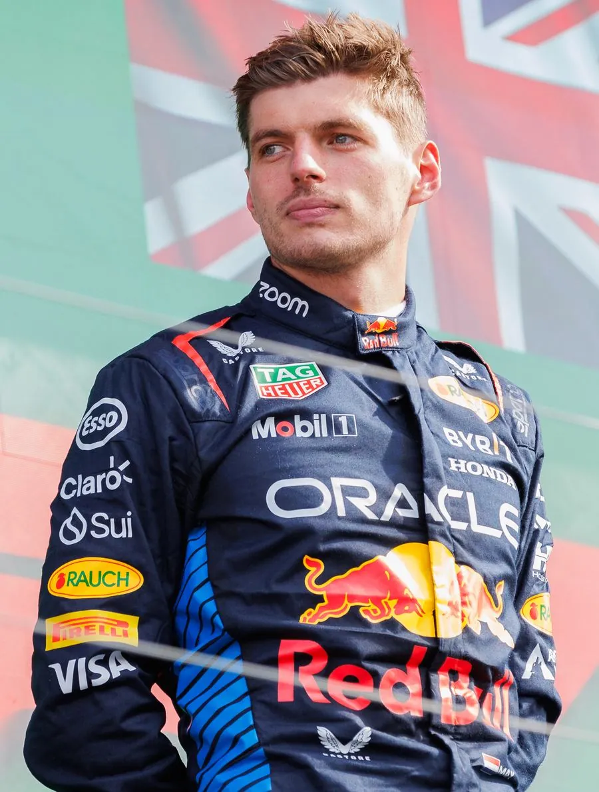

Max
Verstappen


Max Emilian Verstappen was born on 30 September 1997 in Hasselt, Belgium, and races under the Dutch flag for Oracle Red Bull Racing. The son of former Formula One driver Jos Verstappen, he grew up inside the sport—and then rewrote its record books.
In 2015, at just 17 years old, Max became the youngest driver ever to start a Formula One Grand Prix. One year later, in rainy Barcelona, he delivered his first victory—and remains the youngest race winner in the championship’s history. From that afternoon onward, the paddock stopped asking if he would win titles. They started asking how many.
Driving for Red Bull, Max claimed four consecutive World Drivers’ Championships from 2021 to 2024. His racing is defined by ruthless racecraft, late-braking bravery, and an ability to extract pace when others cannot. On track he is uncompromising; off it, calm and precise—the same focus that turned raw talent into a dynasty.
More than a champion, Max Verstappen has become the face of a generation: Pure. Powerful. Relentless. Unstoppable.
